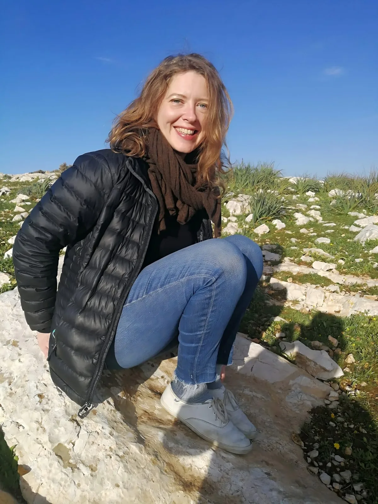

I am an interdisciplinary social scientist, currently at Yale University where I am a postdoctoral researcher in the Department of Psychology.
My research examines the psychological forces that both threaten and strengthen social cohesion in diverse societies. To do so, I combine approaches from social ecology, behavioral economics, and social psychology.
